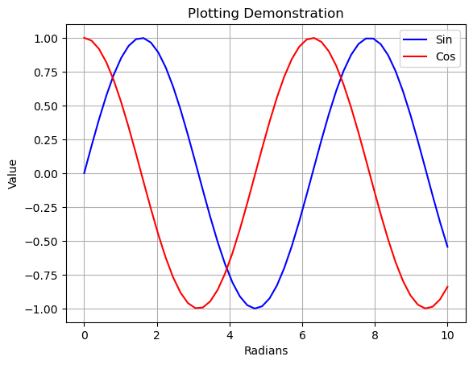
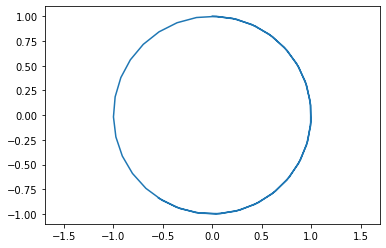
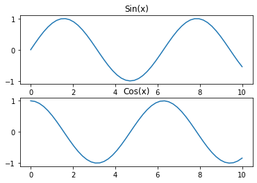

a = 12
b = 2
print(a + b)
print(a**b)
print(a/b)14
144
6.0Lo scopo di questo Jupyter Notebook è farti iniziare a utilizzare Python e Jupyter Notebooks per calcoli tecnici di routine. Questa introduzione presuppone che questa sia la prima esperienza con i notebook Python o Jupyter.
Questo taccuino contiene informazioni disponibili qui e qui
Il modo più semplice per utilizzare i notebook Jupyter è utilizzare un servizio basato su cloud come Google Colaboratory. Avrai bisogno di una connettività Internet continua per accedere al tuo lavoro, ma il vantaggio è che non è necessario installare o mantenere alcun software.
Per un uso offline regolare dovresti considerare l’installazione di un ambiente Jupyter Notebook/Python direttamente sul tuo laptop. Ciò ti fornirà un accesso offline affidabile a un ambiente computazionale. Ciò consentirà anche di installare librerie di codici aggiuntive per soddisfare esigenze particolari.
La scelta di questa opzione richiederà l’installazione iniziale del software e aggiornamenti di routine. Per questo corso il pacchetto consigliato è Anaconda disponibile da Continuum Analytics. Il download e l’installazione del software sono ben documentati e facili da seguire. Attendi circa 10-30 minuti per l’installazione a seconda della velocità della tua connessione.
Dopo l’installazione assicurati di controllare la presenza di aggiornamenti prima di procedere ulteriormente. Con il pacchetto Anaconda ciò avviene eseguendo i seguenti due comandi in una finestra di terminale:
> aggiornamento conda conda
> conda aggiorna anacondaAnaconda include un’applicazione ‘Anaconda Navigator’ che semplifica l’avvio dell’ambiente notebook e gestisce il processo di aggiornamento.
Le istruzioni per Anaconda Navigator sono leggermente diverse e non sono trattate in questo taccuino. Supponiamo che tu utilizzi un terminale da qui in poi.
Se decidi di utilizzare Anaconda, la prima cosa da fare è creare un ambiente virtuale per il corso. Ciò garantisce di non inquinare l’ambiente Python del sistema operativo principale.
Puoi farlo con:
conda create --name feedback-control python=3.10
È necessario eseguire il comando precedente solo una volta.
Quindi devi solo attivare il tuo ambiente:
conda attiva il controllo del feedback
crea una cartella che desideri utilizzare per questo corso. Puoi utilizzare la GUI del tuo sistema operativo o eseguire:
“controllo feedback mkdir”.
Questo crea la cartella “feedback-control” nella tua directory corrente. Assicurati di essere nella cartella corretta prima di eseguire i comandi precedenti.
Per eseguire i notebook è necessario installare i seguenti pacchetti: fastcore pandas matplotlib control sympy numpy ffmpeg-python
puoi farlo eseguendo:
“python -m pip installa fastcore pandas matplotlib controlla sympy numpy ffmpeg-python notebook”
Sei pronto per andare!
Correre:
“quaderno di Giove”.
per avviare la sessione del notebook.
Se stai utilizzando un servizio basato su cloud, al momento dell’accesso verrà avviata una sessione Jupyter.
Se hai installato una distribuzione Jupyter/Python sul tuo laptop, puoi aprire una sessione Jupyter in due modi diversi:
Utilizzare l’app Anaconda Navigator oppure
Apri una finestra di terminale sul tuo laptop ed esegui la seguente istruzione sulla riga di comando:
> quaderno di GioveIn ogni caso, una volta aperta una sessione dovresti vedere una finestra del browser.
A questo punto il browser visualizza un elenco di directory e file. Puoi navigare tra le directory nel solito modo cliccando sui nomi delle directory o sul ‘breadcrumb’ situato proprio vicino all’elenco.
I notebook Jupyter sono semplicemente file in una directory con suffisso .ipynb.
Python è un linguaggio elegante e moderno per la programmazione e la risoluzione di problemi che ha trovato un utilizzo crescente da parte di ingegneri e scienziati. Nelle prossime celle dimostreremo alcune funzionalità di base di Python.
a = 12
b = 2
print(a + b)
print(a**b)
print(a/b)14
144
6.0b2Il linguaggio Python ha solo operazioni molto basilari. La maggior parte delle funzioni matematiche si trovano in varie librerie matematiche. La libreria Numpy è una libreria conveniente. La cella successiva mostra come importare numpy con il prefisso np, quindi utilizzarlo per chiamare una funzione matematica comune
import numpy as np
# mathematical constants
print(np.pi)
print(np.e)
# trignometric functions
angle = np.pi/4
print(np.sin(angle))
print(np.cos(angle))
print(np.tan(angle))3.141592653589793
2.718281828459045
0.7071067811865475
0.7071067811865476
0.9999999999999999Le liste sono un modo versatile di organizzare i tuoi dati in Python.
xList = [1, 2, 3, 4]
xList[1, 2, 3, 4]Puoi unire un elenco a un altro o concatenarli
# Concatenation
x = [1, 2, 3, 4];
y = [5, 6, 7, 8];
x + y[1, 2, 3, 4, 5, 6, 7, 8]np.sum(x)10Operazione elemento per elemento
print(np.add(x,y))
print(np.multiply(x,y))
print(np.dot(x,y))[ 6 8 10 12]
[ 5 12 21 32]
70Un ciclo for è un mezzo per scorrere gli elementi di una lista. I due punti segnano l’inizio del codice che verrà eseguito per ciascun elemento di una lista. Il rientro ha un significato in Python. In questo caso, tutto nel blocco rientrato verrà eseguito ad ogni iterazione del ciclo for. Questo esempio dimostra anche la formattazione della stringa.
for x in xList:
print("sin({0}) = {1:8.5f}".format(x,np.sin(x)))sin(1) = 0.84147
sin(2) = 0.90930
sin(3) = 0.14112
sin(4) = -0.75680Tieni presente che mentre puoi eseguire calcoli sugli elenchi, NumPy ha un oggetto speciale per rappresentare vettori matematici o matrici chiamato array.
Questo è l’oggetto principale di NumPy ed è un array multidimensionale omogeneo. È una tabella di elementi (solitamente numeri), tutti dello stesso tipo, indicizzati da una tupla di numeri interi non negativi. In NumPy le dimensioni sono chiamate assi.
Gli array NumPy sono molto più potenti.
Creazione di un array:
a = np.array([2, 3, 4])array trasforma sequenze di sequenze in array bidimensionali, sequenze di sequenze di sequenze in array tridimensionali e così via.
b = np.array([(1.5, 2, 3), (4, 5, 6)])
print(b)[[1.5 2. 3. ]
[4. 5. 6. ]]Il tipo dell’array può anche essere specificato esplicitamente al momento della creazione:
c = np.array([[1, 2], [3, 4]], dtype=complex)
print(c)[[1.+0.j 2.+0.j]
[3.+0.j 4.+0.j]]Spesso gli elementi di un array sono originariamente sconosciuti, ma la sua dimensione è nota. Pertanto, NumPy offre diverse funzioni per creare array con contenuto segnaposto iniziale. Questi riducono al minimo la necessità di ampliare gli array, un’operazione costosa.
print(np.zeros((3, 4)))[[0. 0. 0. 0.]
[0. 0. 0. 0.]
[0. 0. 0. 0.]]np.ones((2, 3, 4), dtype=np.int16)array([[[1, 1, 1, 1],
[1, 1, 1, 1],
[1, 1, 1, 1]],
[[1, 1, 1, 1],
[1, 1, 1, 1],
[1, 1, 1, 1]]], dtype=int16)Gli operatori aritmetici sugli array si applicano in base agli elementi. Viene creato un nuovo array e riempito con il risultato.
a = np.array([20, 30, 40, 50])
b = np.arange(4)
print(a)
print(b)[20 30 40 50]
[0 1 2 3]c = a - b
print(c)[20 29 38 47]b**2array([0, 1, 4, 9])10 * np.sin(a)array([ 9.12945251, -9.88031624, 7.4511316 , -2.62374854])a < 35array([ True, True, False, False])Importante A differenza di molti linguaggi a matrice, l’operatore prodotto “*” opera in modo elementare negli array NumPy. Il prodotto della matrice può essere eseguito utilizzando l’operatore @ (in Python >=3.5) o la funzione o il metodo dot:
A = np.array([[1, 1],
[0, 1]])
B = np.array([[2, 0],
[3, 4]])A * B # elementwise productarray([[2, 0],
[0, 4]])A @ B # matrix productarray([[5, 4],
[3, 4]])A.dot(B) # another matrix productarray([[5, 4],
[3, 4]])I dizionari sono utili per archiviare e recuperare dati come coppie chiave-valore.
mw = {'CH4': 16.04, 'H2O': 18.02, 'O2':32.00, 'CO2': 44.01}
mw{'CH4': 16.04, 'H2O': 18.02, 'O2': 32.0, 'CO2': 44.01}Possiamo recuperare un valore da un dizionario:
mw['CH4']16.04Un ciclo for è un mezzo utile per eseguire iterazioni su tutte le coppie chiave-valore di un dizionario.
for values in mw.keys():
print("Value {:<s} is {}".format(values, mw[values]))Value CH4 is 16.04
Value H2O is 18.02
Value O2 is 32.0
Value CO2 is 44.01I dizionari possono essere ordinati per chiave o per valore
for values in sorted(mw):
print(" {:<8s} {}".format(values, mw[values])) CH4 16.04
CO2 44.01
H2O 18.02
O2 32.0for values in sorted(mw, key = mw.get):
print(" {:<8s} {}".format(values, mw[values])) CH4 16.04
H2O 18.02
O2 32.0
CO2 44.01L’importazione della libreria matplotlib.pyplot fornisce funzionalità di tracciamento dei notebook IPython molto simili a quelle di Matlab. Ecco alcuni esempi che utilizzano le funzioni di
import matplotlib.pyplot as plt
import numpy as np
x = np.linspace(0,10)
y = np.sin(x)
z = np.cos(x)
plt.plot(x,y,'b',x,z,'r')
plt.xlabel('Radians');
plt.ylabel('Value');
plt.title('Plotting Demonstration')
plt.legend(['Sin','Cos'])
plt.grid()
plt.plot(y,z)
plt.axis('equal')(-1.09972447591003,
1.0979832896606587,
-1.0992804688576738,
1.0999657366122702)
plt.subplot(2,1,1)
plt.plot(x,y)
plt.title('Sin(x)')
plt.subplot(2,1,2)
plt.plot(x,z)
plt.title('Cos(x)')Text(0.5, 1.0, 'Cos(x)')
Python offre una gamma completa di funzionalità del linguaggio di programmazione ed esiste una gamma apparentemente infinita di pacchetti per calcoli scientifici e ingegneristici. Ecco alcuni suggerimenti sui luoghi in cui è possibile reperire ulteriori informazioni sulla programmazione per applicazioni di ingegneria in Python.
Questa eccellente introduzione a Python è rivolta agli studenti universitari in scienze senza esperienza di programmazione. È gratuito e disponibile al seguente link.
Il seguente testo è disponibile su Amazon. Le risorse per questo libro sono disponibili su github.
pycse è un pacchetto di funzioni Python, esempi e documenti preparati da John Kitchin presso la Carnegie Mellon University.
E c’è molto altro ancora! Cercalo su Google!
Questa seconda parte del quaderno descrive alcuni altri concetti Python che verranno utilizzati durante la lezione.
#A variable stores a piece of data and gives it a name
answer = 42
#answer contained an integer because we gave it an integer!
is_it_thursday = True
is_it_wednesday = False
#these both are 'booleans' or true/false values
pi_approx = 3.1415
#This will be a floating point number, or a number containing digits after the decimal point
my_name = "Andrea"
#This is a string datatype, the name coming from a string of characters
#Data doesn't have to be a singular unit
#p.s., we can print all of these with a print command. For Example:
print(answer)
print(pi_approx)42
3.1415#What if we want to store many integers? We need a list!
prices = [10, 20, 30, 40, 50]
#This is a way to define a list in place. We can also make an empty list and add to it.
colors = []
colors.append("Green")
colors.append("Blue")
colors.append("Red")
print(colors)
#We can also add unlike data to a list
prices.append("Sixty")
#As an exercise, look up lists in python and find out how to add in the middle of a list!
print(prices)
#We can access a specific element of a list too:
print(colors[0])
print(colors[2])
#Notice here how the first element of the list is index 0, not 1!
#Languages like MATLAB are 1 indexed, be careful!
#In addition to lists, there are tuples
#Tuples behave very similarly to lists except that you can't change them
# after you make them
#An empty Tuple isn't very useful:
empty_tuple = ()
#Nor is a tuple with just one value:
one_tuple = ("first",)
#But tuples with many values are useful:
rosa_parks_info = ("Rosa", "Parks", 1913, "February", 4)
#You can access tuples just like lists
print(rosa_parks_info[0] + " " + rosa_parks_info[1])
# You cannot modify existing tuples, but you can make new tuples that extend
# the information.
# I expect Tuples to come up less than lists. So we'll just leave it at that.['Green', 'Blue', 'Red']
[10, 20, 30, 40, 50, 'Sixty']
Green
Red
Rosa Parksfloat1 = 5.75
float2 = 2.25
#Addition, subtraction, multiplication, division are as you expect
print(float1 + float2)
print(float1 - float2)
print(float1 * float2)
print(float1 / float2)
#Here's an interesting one that showed up in the first homework in 2017. Modulus:
print(5 % 2)8.0
3.5
12.9375
2.5555555555555554
1#Just about every standard math function on a calculator has a python equivalent pre made.
#however, they are from the 'math' package in python. Let's add that package!
import math
print(math.log(float1))
print(math.exp(float2))
print(math.pow(2,5))
# There is a quicker way to write exponents if you want:
print(2.0**5.0)
#Like in MATLAB, you can expand the math to entire lists
list3 = [1, 2, 3, 4, 5]
print(2 * list3)1.749199854809259
9.487735836358526
32.0
32.0
[1, 2, 3, 4, 5, 1, 2, 3, 4, 5]# We can plot easily in Python like in matlab, just import the relevant package!
import matplotlib.pyplot as plt
x_vals = [-2, -1, 0, 1, 2]
y_vals = [-4, -2, 0, 2, 4]
plt.plot(x_vals, y_vals)
#Repeat code until a conditional statement ends the loop
#Let's try printing a list
fib = [1, 1, 2, 3, 5, 8]
#While loops are the basic type
i = 0
while(i < len(fib)):
print(fib[i])
i = i + 1
#In matlab, to do the same thing you would have the conditional as: counter < (length(fib) + 1)
#This is because matlab starts indexing at 1, and python starts at 0.
#The above type of loop is so common that the 'for' loop is the way to write it faster.
print("Let's try that again")
#This is most similar to for loops in matlab
for i in range(0, len(fib)) :
print(fib[i])
print("One more time:")
#Or you can do so even neater
for e in fib:
print(e)1
1
2
3
5
8
Let's try that again
1
1
2
3
5
8
One more time:
1
1
2
3
5
8Una funzione è un blocco di codice che viene eseguito solo quando viene chiamato.
È possibile passare dati, noti come parametri, in una funzione.
Di conseguenza, una funzione può restituire dati.
def my_function():
print("Hello from a function")Per chiamare una funzione, utilizzare il nome della funzione seguito da parentesi:
my_function()Hello from a functionLe informazioni possono essere passate alle funzioni come argomenti.
Gli argomenti vengono specificati dopo il nome della funzione, all’interno delle parentesi. Puoi aggiungere tutti gli argomenti che desideri, separandoli semplicemente con una virgola.
L’esempio seguente ha una funzione con un argomento (fname). Quando viene chiamata la funzione, passiamo un nome, che viene utilizzato all’interno della funzione per stampare il nome completo:
def my_function(fname):
print(fname + " Refsnes")
my_function("Emil")
my_function("Tobias")
my_function("Linus")Emil Refsnes
Tobias Refsnes
Linus RefsnesPuoi inviare qualsiasi tipo di dato come argomento a una funzione (stringa, numero, lista, dizionario ecc.) e verrà trattato come lo stesso tipo di dato all’interno della funzione.
Per esempio. se invii una Lista come argomento, sarà ancora una Lista quando raggiunge la funzione:
def my_function(food):
for x in food:
print(x)fruits = ["apple", "banana", "cherry"]
my_function(fruits)apple
banana
cherryPer consentire a una funzione di restituire un valore, utilizzare l’istruzione return:
def my_function(x):
return 5 * x
print(my_function(3))
print(my_function(5))
print(my_function(9))15
25
45Una classe è un progetto o un prototipo definito dall’utente da cui vengono creati gli oggetti. Le classi forniscono un mezzo per raggruppare insieme dati e funzionalità. La creazione di una nuova classe crea un nuovo tipo di oggetto, consentendo la creazione di nuove istanze di quel tipo. A ogni istanza di classe possono essere associati attributi per mantenerne lo stato. Le istanze di classe possono anche avere metodi (definiti dalla loro classe) per modificare il loro stato.
Per comprendere la necessità di creare una classe consideriamo un esempio, supponiamo che tu voglia tenere traccia del numero di cani che possono avere attributi diversi come razza, età. Se viene utilizzata una lista, il primo elemento potrebbe essere la razza del cane mentre il secondo elemento potrebbe rappresentarne l’età. Supponiamo che ci siano 100 cani diversi, quindi come faresti a sapere quale elemento dovrebbe essere quale? E se volessi aggiungere altre proprietà a questi cani? Questo manca di organizzazione ed è per questo che abbiamo bisogno di lezioni.
La classe crea una struttura dati definita dall’utente, che contiene i propri membri dati e funzioni membro, a cui è possibile accedere e utilizzare creando un’istanza di quella classe. Una classe è come un progetto per un oggetto.
Non è difficile definire la classe Python. Per fare ciò, avrai bisogno della parola chiave “class”:
class NomeClasse: # Dichiarazione-1 . . . # Dichiarazione-N
Per esempio
class Example:
variable = 123Se esegui il codice precedente in un ambiente Python, scoprirai che puoi chiamare “Example.variable” per restituire un valore intero.
Example.variable123Questo è un esempio di classe per oggetti di soli dati, ma è altrettanto semplice definire una classe che restituisce un oggetto funzione aggiungendo la parola chiave “def” al codice:
class Example:
def b(self):
return "this is an example class"Example.b # we are accessing the function...this is probably not what we want to do..<function __main__.Example.b(self)>Abbiamo bisogno di alcuni concetti in più:
Un Oggetto è un’istanza di una Classe. Una classe è come un progetto mentre un’istanza è una copia della classe con valori effettivi. Non è più un’idea, è un cane vero, come un cane di razza carlino che ha sette anni. Puoi avere molti cani per creare molte istanze diverse, ma senza la classe come guida ti perderesti, non sapendo quali informazioni sono richieste. Un oggetto è composto da:
Quando viene creato un oggetto di una classe, si dice che la classe sia istanziata. Tutte le istanze condividono gli attributi e il comportamento della classe. Ma i valori di tali attributi, ovvero lo stato, sono unici per ciascun oggetto. Una singola classe può avere un numero qualsiasi di istanze.
Esempio:

class Dog:
# A simple class
# attribute
attr1 = "mammal"
attr2 = "dog"
# A sample method
def fun(self):
print("I'm a", self.attr1)
print("I'm a", self.attr2)
# Object instantiation
Rodger = Dog()
# Accessing class attributes
# and method through objects
print(Rodger.attr1)
Rodger.fun()mammal
I'm a mammal
I'm a dogI metodi di classe devono avere un primo parametro aggiuntivo nella definizione del metodo. Non diamo un valore per questo parametro quando chiamiamo il metodo, lo fornisce Python.
Se abbiamo un metodo che non accetta argomenti, allora dobbiamo avere ancora un argomento.
Quando chiamiamo un metodo di questo oggetto come myobject.method(arg1, arg2), questo viene automaticamente convertito da Python in MyClass.method(myobject, arg1, arg2).
Nota che questo significa che all’interno della funzione method (nel nostro esempio) ora abbiamo accesso all’istanza della classe! così possiamo accedere alle sue variabili, ecc.
Il metodo init è simile ai costruttori in C++, costruisce l’oggetto e può essere utilizzato per inizializzare lo stato dell’oggetto.
Come i metodi, anche un costruttore contiene una raccolta di istruzioni (ovvero istruzioni) che vengono eseguite quando viene creato l’oggetto.
Il metodo __init__ viene eseguito non appena viene istanziato un oggetto di una classe. Il metodo è utile per eseguire qualsiasi inizializzazione che desideri eseguire con il tuo oggetto.
# A Sample class with init method
class Person:
# init method or constructor
def __init__(self, name):
self.name = name
# Sample Method
def say_hi(self):
print('Hello, my name is', self.name)
p = Person('Nikhil') # as soon as we do this, the __init__ method is called.
p.say_hi()Hello, my name is NikhilLe variabili di istanza vengono utilizzate per archiviare dati univoci per ciascuna istanza della classe. Le variabili di istanza sono variabili il cui valore è assegnato all’interno del metodo __init__ o all’interno di un metodo di classe (un metodo con l’argomento self)
Le variabili di classe riguardano attributi e metodi condivisi da tutte le istanze della classe. Le variabili di classe sono variabili il cui valore viene assegnato direttamente nella classe.
# Class for Dog
class Dog:
# Class Variable
animal = 'dog'
# The init method or constructor
def __init__(self, breed, color):
# Instance Variable
self.breed = breed
self.color = color
# Objects of Dog class
Rodger = Dog("Pug", "brown")
Buzo = Dog("Bulldog", "black")
print('Rodger details:')
print('Rodger is a', Rodger.animal)
print('Breed: ', Rodger.breed)
print('Color: ', Rodger.color)
print('\nBuzo details:')
print('Buzo is a', Buzo.animal)
print('Breed: ', Buzo.breed)
print('Color: ', Buzo.color)
# Class variables can be accessed using class
# name also
print("\nAccessing class variable using class name")
print(Dog.animal)Rodger details:
Rodger is a dog
Breed: Pug
Color: brown
Buzo details:
Buzo is a dog
Breed: Bulldog
Color: black
Accessing class variable using class name
dogGoogle Colab - Un’introduzione a Google Colab, McGraw Center for Teaching and Learning - Introduzione a Google Colab - Procedura dettagliata di Colab, Università di Stanford - Tutorial di Google Colab per scienziati di dati, Datacamp.com